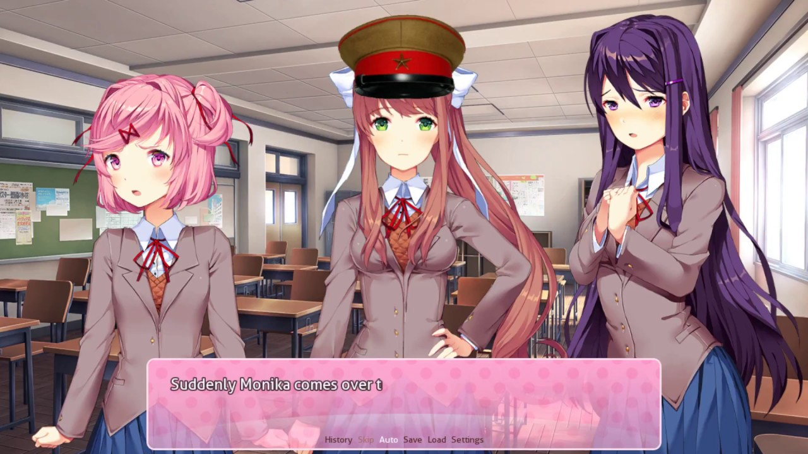

Doki Heika Banzai
Este é o projeto em que trabalhei nas últimas semanas. É uma comédia ambientada no Japão Imperial da Segunda Guerra Mundial e é bem curta! Não posso revelar muito do enredo sem revelar muito, mas posso dizer que o protagonista e as quatro garotas vão guerrear, e aventuras malucas estão garantidas! O mod tem um pouco de NSFW.
⬇ Download